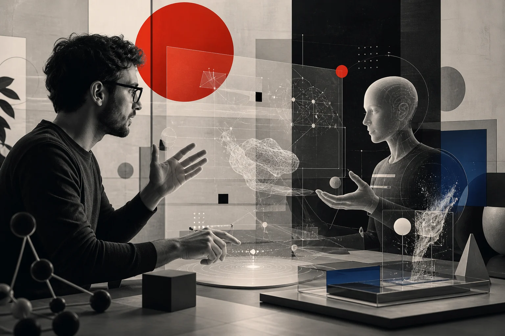
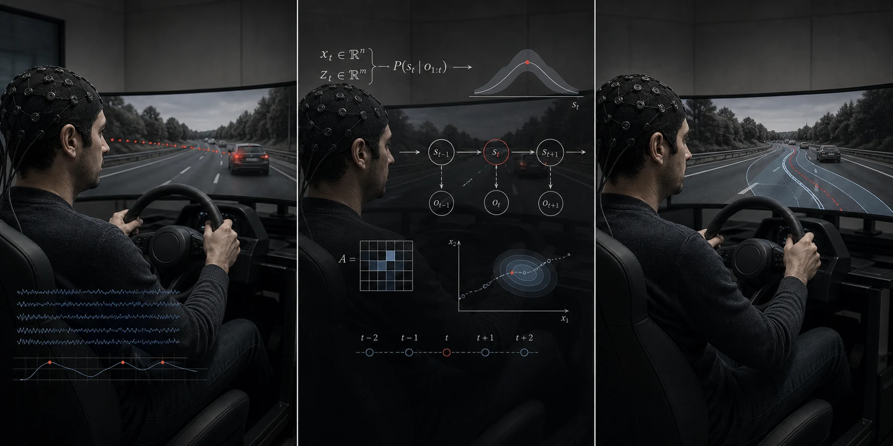

Personal Informatics System Lab
Study the individual. Design for everyone.
We study the person inside the system—then build interfaces, environments, and embodied agents that can sense, explain, adapt, and remain under human control.
Explore our projectsOur research loop
Sense.
Understand.
Adapt.
- 01Individual
signals - 02Human
states - 03Adaptive
systems
From human variation to intelligent systems that respond with care.
Superintelligence
serves the individual.
Personal Informatics begins with the individual.
PIS Lab studies how people perceive, understand, anticipate, and direct intelligent systems. Through interaction design, we turn computational capability into human capability—creating products, environments, and agents that respond to individual needs and support a harmonious human–AI relationship.

-
01
Perceivable
Critical change reaches the right person at the right moment.
-
02
Understandable
Evidence, boundaries, and uncertainty form a usable mental model.
-
03
Predictable
People can inspect possible consequences before they commit.
-
04
Controllable
Questioning, steering, overriding, and recovery remain explicit.
Ideas tested
in real systems.
We do not begin with a technology category. We begin with a human situation—then combine psychology, AI, design, and engineering until the whole loop works.
Loading current projects…
A loop built
around the person.
Every project moves between observation and intervention. The technology changes; the human-centered loop does not.

- 01
Sense
Collect gaze, physiology, behavior, language, and context.
- 02
Model
Build an individual baseline and estimate changing cognitive state.
- 03
Externalize
Make evidence, boundaries, uncertainty, and consequences tangible.
- 04
Act
Adapt an interface, environment, training strategy, or embodied agent.
- 05
Learn
Use outcomes and human feedback to recalibrate the next cycle.
Research happens
by building.
Students move from a research question to a working prototype, then use live interaction to make assumptions, system behavior, and human response testable.
Different disciplines.
One working table.
Psychology, human factors, AI, interaction design, and robotics meet through shared projects—not parallel silos.
Loading the lab roster…
Join the lab
Bring a hard
human problem.
We welcome students, collaborators, and partners who want to turn difficult human situations into research that can be built, tested, and used.
poly.zhsun@outlook.com